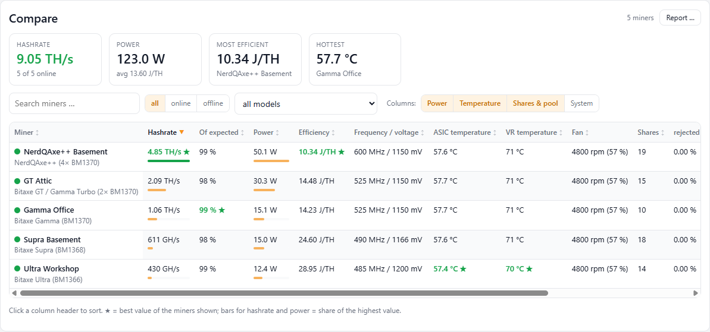
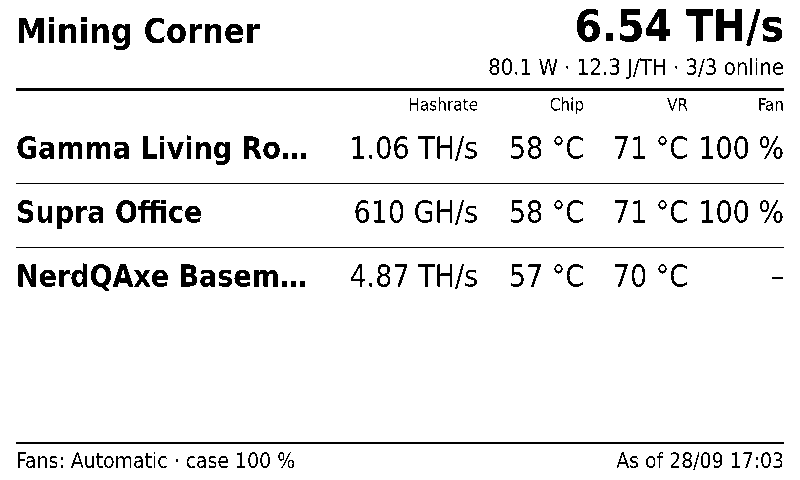
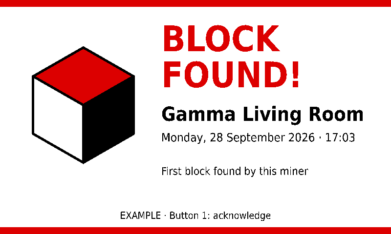
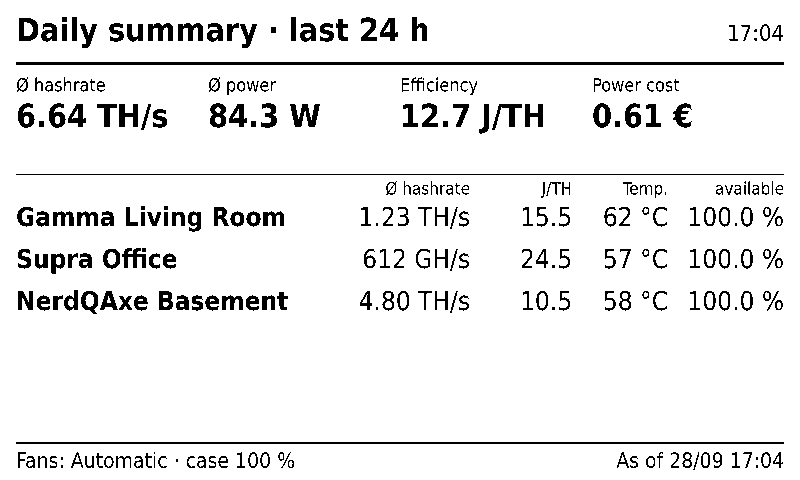
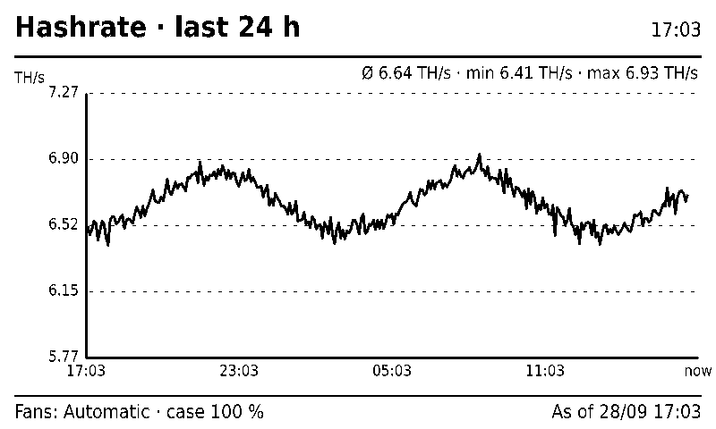
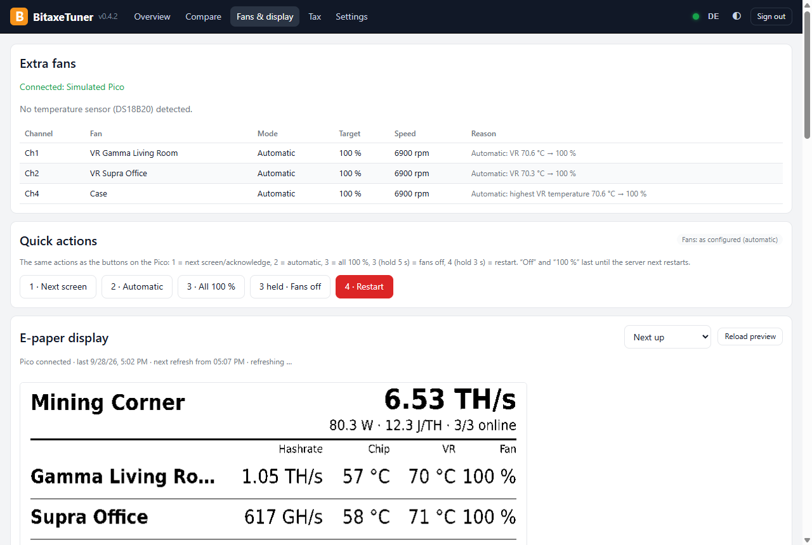

Everything a home miner needs
From the first benchmark to continuous operation: BitaxeTuner does the trying and the watching – you make the decisions.
Automatic benchmark
Tests frequency and voltage step by step, measures every combination and finds the best setting – for hashrate, efficiency or both.
Safe, not just fast
Limits per model, a watchdog on every sample, stop on overheating. Every change only after confirmation showing the old and new value.
Around the clock
The server runs on a Raspberry Pi, a Windows machine or in a Docker container – your PC can be switched off.
Monitoring & push
History, offline and temperature alerts, health early warning (cooling, fan, efficiency), pool changes, log alerts, best diff records, daily and monthly report on your phone – via ntfy, Telegram, Discord, Pushover or your own webhook, also several at once: own messages, miners and report content per service, e.g. for a community group.
Efficiency advisor
Shows the best tested setting per miner and how much power it saves per month – applied only after your confirmation.
Soak test
Checks a setting for hours – for one or all miners at once – and suggests a more stable one if there are problems.
Home Assistant
All values via MQTT with automatic device discovery. Frequency and voltage stay off-limits.
Smart plugs
Shelly plugs measure the real consumption including power supply and extra fans. Costs – tariff gross or net, optionally with hourly prices from aWATTar or Tibber –, efficiency and the monthly and annual report (PDF, CSV) use it; extra consumption is reported.
Many miners at once
Find and add miners in your home network, copy pool and fan settings from one miner to others – with preview and backup, never frequency or voltage.
Backup
Daily and before every update a verified backup to a USB stick, network drive or your PC – restored in one click, the previous state is kept. Passwords are never included.
Log
Who set which frequency and voltage when? Benchmarks, soak tests, automation, fan control and connections – kept for at least 30 days, filterable, as CSV.
Compare & report
All miners side by side with filters and best values; as a printable report with the values and charts you choose – with a “cooling” preset, ideal for a question in the community.
Fans under control
Set the miner fan to automatic with a target temperature or to a fixed value – within the model's limits and with confirmation.
One-click updates
Update server and Windows app together: backup first, then the server, then the app – if a step fails, everything stays as it was.
Tax overview
Income with EUR rate, sales with holding period (FIFO) and CSV export – according to German tax law (§ 23 EStG).
English & German
Interface, push messages, daily report and e-paper in English or German; numbers and dates in your system's format.
In the browser, on your phone, on the PC
The BitaxeTuner server comes with a complete interface. The Windows app can embed it or do everything by itself.
- Ready-made SD card image for the Raspberry Pi – the app sets up Wi-Fi, user, country/time zone/keyboard and your data
- Password-less SSH: key and terminal straight from the Windows app
- Windows service or Docker container (NAS, home server)
- Password, view-only PIN and API tokens; reachable only on your home network
- One-time, verified move of your data from the PC to the server – and back
- One-click updates – server and Windows app together, with a backup first; the old version stays as a fallback
- Introduction on first start and “What's new” after every update

Desktop app or server – what works where?
You can switch in both directions at any time – your data moves along, verified.
| Desktop app | Server browser & phone | Desktop app with server | |
|---|---|---|---|
| Runs around the clock without the PC switched on | – | ✓ | ✓the server |
| Monitoring, history, push, daily report | ✓ | ✓ | ✓ |
| Benchmark, soak test, automation, watchdog | ✓ | ✓ | ✓ |
| Smart plugs, electricity cost, monthly/annual report | ✓ | ✓ | ✓ |
| Compare with filters, before/after, efficiency advisor | compare | ✓ | ✓ |
| Home Assistant / MQTT | – | ✓ | ✓ |
| Pico fans, e-paper, buttons | – | ✓ | ✓ |
| Tax: record incoming payments | ✓while the PC runs | ✓around the clock | ✓ |
| Tax: edit wallets and sales | ✓ | view and CSV only | view and CSV only |
| Backup | ✓second folder, USB, NAS | ✓USB stick, NAS | ✓plus a copy on the PC |
| Phone access | view only (PIN) | ✓admin or view only | ✓as server |
| Prepare Raspberry Pi, SSH terminal | ✓ | – | ✓ |
Accessories: fans, e-paper, buttons
A Raspberry Pi Pico for a few euros turns the server into a small mining control centre – built without any soldering.
- Up to six 4-pin PWM fans: VR cooling per miner and case fans, automatic by temperature
- 7.5″ e-paper with overview, daily summary, history – and full screen when a block is found
- Four buttons for display, fans and restart
- Temperature sensors, e.g. at the power supply and in the miner room
- If anything fails, the fans automatically run at full speed




Fans and display under control
Curves per fan, case group, night mode, temperature sensors with their own warning thresholds – and a preview of every e-paper page right in the browser.

Download & get started
All downloads with SHA-256 checksums are on the release page.
The Windows setups are built by GitHub Actions directly from the public source code.
Note: the Windows setups are not digitally signed yet, so Windows shows a warning on first start
(“More info” → “Run anyway”). We are working on getting the program signed.
Until then you can verify a file with the SHA-256 checksums on the release page.
PC only
Install BitaxeTuner-Setup-….exe, let it find your miners, start a benchmark. Monitoring runs while the PC is on.
Raspberry Pi (24/7)
Write the image …-pi-arm64.img.xz with Raspberry Pi Imager, then “Prepare Raspberry Pi” in the app – done. Pi 3, 4, 5 or Zero 2 W.
Docker / NAS
docker compose up -d with the included docker-compose.yml – then set it up in the browser.
⚠️ Overclocking at your own risk. Higher frequency and voltage increase power draw and temperature and can damage the hardware. Check your power supply and cooling. BitaxeTuner sticks to the limits of your device profile and changes nothing without your confirmation.
🌐 The program speaks English and German: desktop app Settings → Language, browser EN/DE button, server messages Settings → Server language. The tax module follows German tax law.